Partie 1: Bases de la Data Visualisation
Objectif
L’objectif de cette séance est de se familiariser avec les graphiques de base. En fonction des données, et de l’objectif de la visualisation, créer un graphique à l’aide de différents packages R.
Le document final pourra vous servir de mémo pour le choix des grpahiques.
Guide
Votre mémo pour la data visualisation pourra suivre le fil conducteur fonctionnel des graphiques : comparaison, distribution, relation et composition.
L’image ci-dessous vous donne une vision globale des différents types de graphiques qui existent en fonction des objectifs.

Données
Dans les packages de base, plusieurs bases de données sont incluses dans R.
head(mtcars)## mpg cyl disp hp drat wt qsec vs am gear carb
## Mazda RX4 21.0 6 160 110 3.90 2.620 16.46 0 1 4 4
## Mazda RX4 Wag 21.0 6 160 110 3.90 2.875 17.02 0 1 4 4
## Datsun 710 22.8 4 108 93 3.85 2.320 18.61 1 1 4 1
## Hornet 4 Drive 21.4 6 258 110 3.08 3.215 19.44 1 0 3 1
## Hornet Sportabout 18.7 8 360 175 3.15 3.440 17.02 0 0 3 2
## Valiant 18.1 6 225 105 2.76 3.460 20.22 1 0 3 1head(diamonds)## # A tibble: 6 × 10
## carat cut color clarity depth table price x y z
## <dbl> <ord> <ord> <ord> <dbl> <dbl> <int> <dbl> <dbl> <dbl>
## 1 0.23 Ideal E SI2 61.5 55 326 3.95 3.98 2.43
## 2 0.21 Premium E SI1 59.8 61 326 3.89 3.84 2.31
## 3 0.23 Good E VS1 56.9 65 327 4.05 4.07 2.31
## 4 0.29 Premium I VS2 62.4 58 334 4.20 4.23 2.63
## 5 0.31 Good J SI2 63.3 58 335 4.34 4.35 2.75
## 6 0.24 Very Good J VVS2 62.8 57 336 3.94 3.96 2.48head(iris)## Sepal.Length Sepal.Width Petal.Length Petal.Width Species
## 1 5.1 3.5 1.4 0.2 setosa
## 2 4.9 3.0 1.4 0.2 setosa
## 3 4.7 3.2 1.3 0.2 setosa
## 4 4.6 3.1 1.5 0.2 setosa
## 5 5.0 3.6 1.4 0.2 setosa
## 6 5.4 3.9 1.7 0.4 setosaPour comprendre le sens des variables, il suffit de regarder dans l’aide ?mtcars.
datatable(iris)Dans le package ggplot2, vous trouvez plusieurs autres séries de données:
str(midwest)
str(economics)
str(movies)
str(mpg)
str(msleep)
str(presidential)
str(seals)Pour avoir plus de données, vous pouvez également consulter Rdatasets.
Comparison
library(ggplot2)
library(data.table)La comparaison de plusieurs valeurs est très souvent utilisée. En fonction des besoins, on peut utiliser plusieurs types de graphiques pour la visualiser.
Bar plot
Pour une comparaison simple, on peut utiliser un grpahique à barres.
data=data.table(iris)
res=data[,.(m=mean(Sepal.Length)),by=Species]
barplot(res$m,names.arg=res$Species,
main="Longueurs moyennes des sépales en fonction des espèces")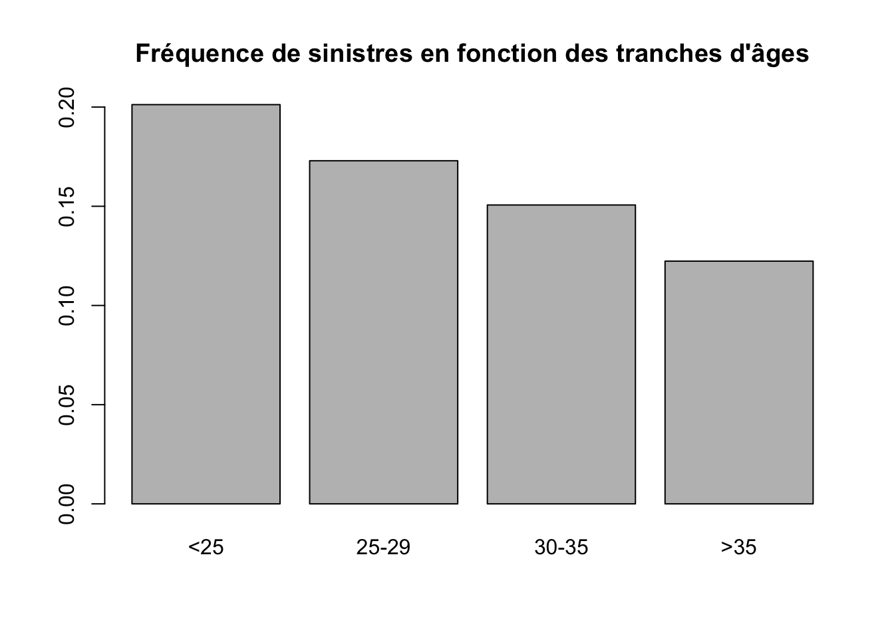
- Changer les axes x et y à l’aide de ggplot.
A fin de visualiser plus d’informations sur le graphique.
- Ajouter les volatilités de part et d’autre des moyennes
- Ajouter quelques quantiles
On obtient ainsi des graphiques à barres d’erreur.
S’il y a plusieurs variables, il est possible de les afficher afin de visualiser la comparaison de toutes les variables en fonction des groupes.
- Afficher plusieurs variables
Boxplot
Le boxplot permet d’afficher quelques statistiques simples des variables.
p <- ggplot(iris, aes(Species, Sepal.Length))+ geom_boxplot()
p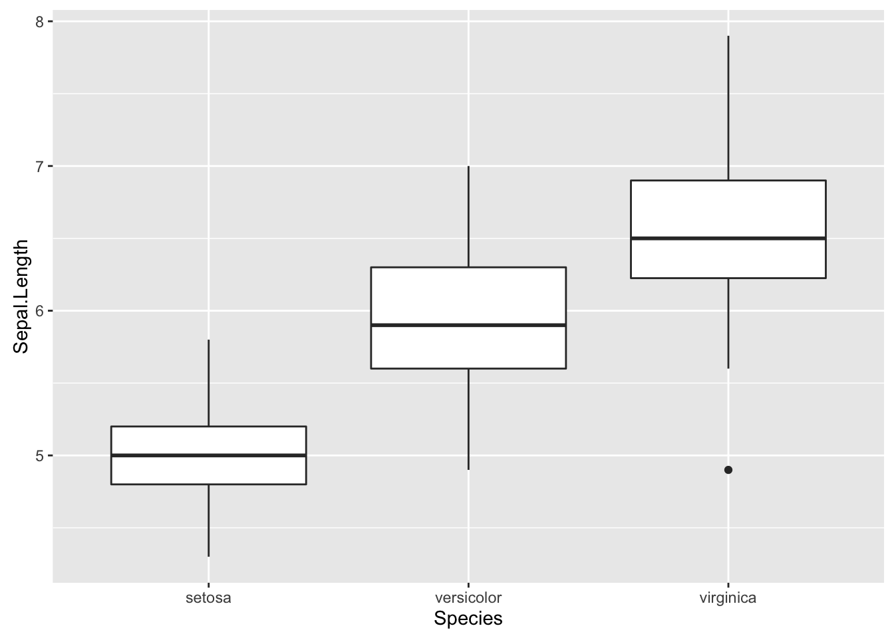
Identifier les valeurs qui correspondent aux traits épais au milieu des boîtes, les limites supérieure et inférieure des boîtes, ainsi que les limites des traits verticaux.
À partir de quand les points isolés sont affichés ? (en terme de quantile)
Violin plot
Le violin plot permet de donner la forme des densités.
p <- ggplot(iris, aes(Species, Sepal.Length))
p + geom_violin()
- Rajouter les les statistiques de bases (moyenne, volatilité, quantiles) sur le violin plot.
- Changer les axes x et y.
Beanplot
Sur la base de grpahiques en violin, il est possible de faire mieux avec un beanplot.
- Réaliser un bean plot à l’aide du pacakge beanplot
Tabplot
Pour ce graphique, utilisez le package tabplot.
library(tabplot)
tableplot(iris, sortCol="Species")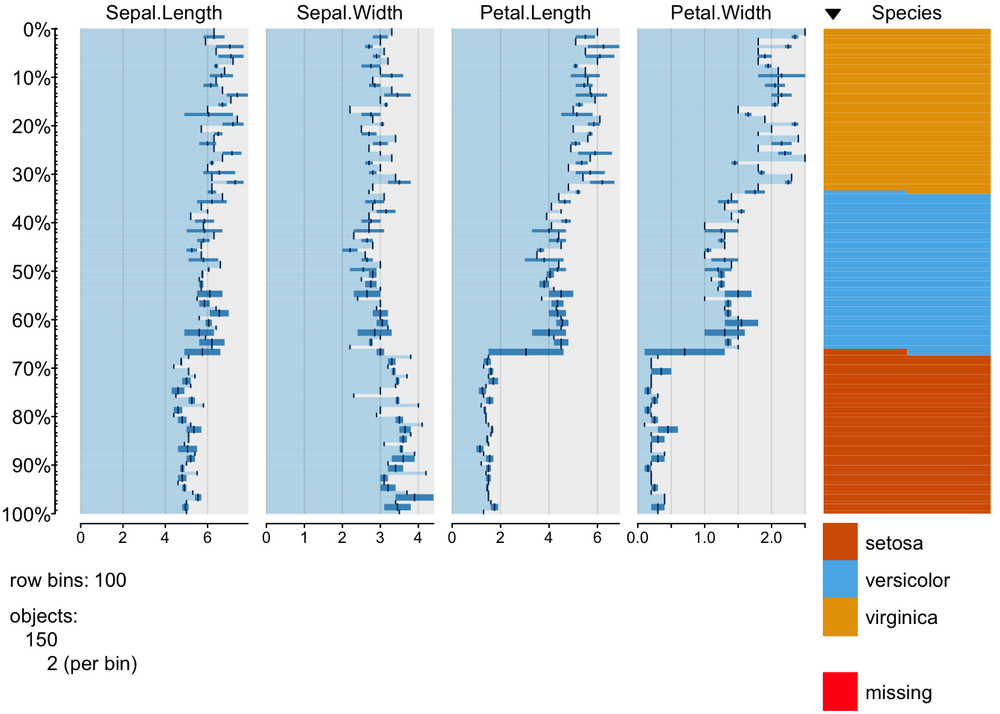
Parallel Coordinates
library(MASS)
parcoord(iris[1:4], col=iris$Species)- Rerchercher plusieurs façons de tracer ce type de graphiques.
- Expliquer l’intérêt d’un tel graphique.
Conclusion
Comme vous avez pu remarquer, les graphiques de comparaison contiennent de plus en plus d’informations:
- Moyennes
- Moyennes avec les écarts-types
- Moyennes avec les quantiles
- Forme des densités
- Densités (qui sera vue dans la partie histogrammes et densités)
- Données brutes
En fonction de vos besoins, ces différents types de graphiques permettent de comparer les données avec plus ou moins de détails.
Evolultion temporelle
Line plot
Explorer et visualiser les différentes variables de la série de données economics (du package ggplots)
a <- ggplot(data = economics, aes(x = date, y = unemploy))
a <- a + geom_line()
a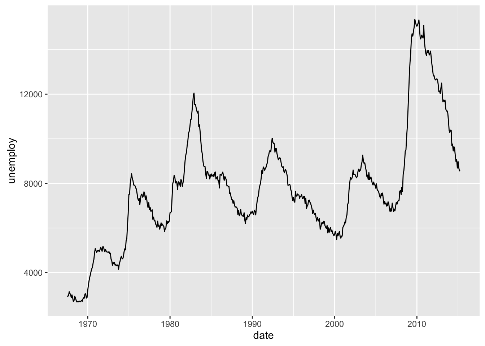
- Changer le type de lignes
- Changer la couleur
- Afficher plusieurs variables
- Visualiser de façon interactive la série de données avec le package
dygraphs
Circular plot
Afin de mettre en évidence la saisonnalité, on peut créer un graphique circulaire. Dans le dossier de Google Drive, vous pouvez trouver des informations sur la sécurité routière (les évolutions mensuelles sur les accidents corporels, dont les nombres de blessés, les nombres d’hospitalisés, et les nombres de tués à 30 jours).
- Visualiser l’évolution temporelle de ces différents types de nombres, et réaliser une comparaison
- Mettre en évidence la saisonnalité des données avec un graphique circulaire
Composition
Dans une série de données, on doit parfois étudier la composition, ou la proportion de certaines catégories.
Pie chart
Le camembert est sans doute le grpahique le plus classique pour afficher la composition des données.
library(ggplot2)
pie(table(diamonds$cut))- Créer un camembert à l’aide du package ggplot2
- Indiquer des informations dans les différentes parts : valeurs ou pourcentages
Waffle
Dans certains cas, il pourrait être intéressant d’utiliser un camembert carré ou graphique en gaufre.
- Réaliser un graphique en gaufre à l’aide du package waffle.
Barres empilées
Lorsqu’il s’agit de comparer plusieurs catégories, on peut utiliser les graphiques à barres empilées.
Pour visualiser les volumes, on peut utiliser la fonction suivante:
ggplot(diamonds, aes(clarity, fill=cut)) + geom_bar()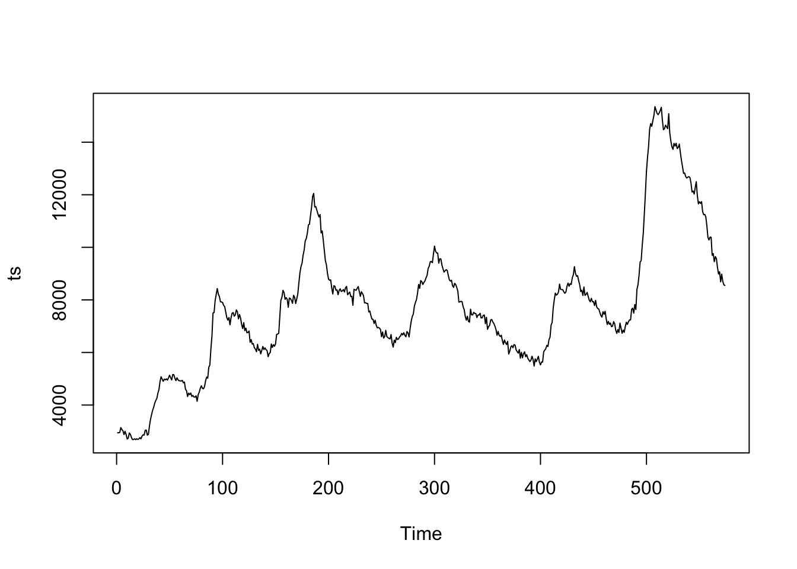
Pour visualiser les pourcentages:
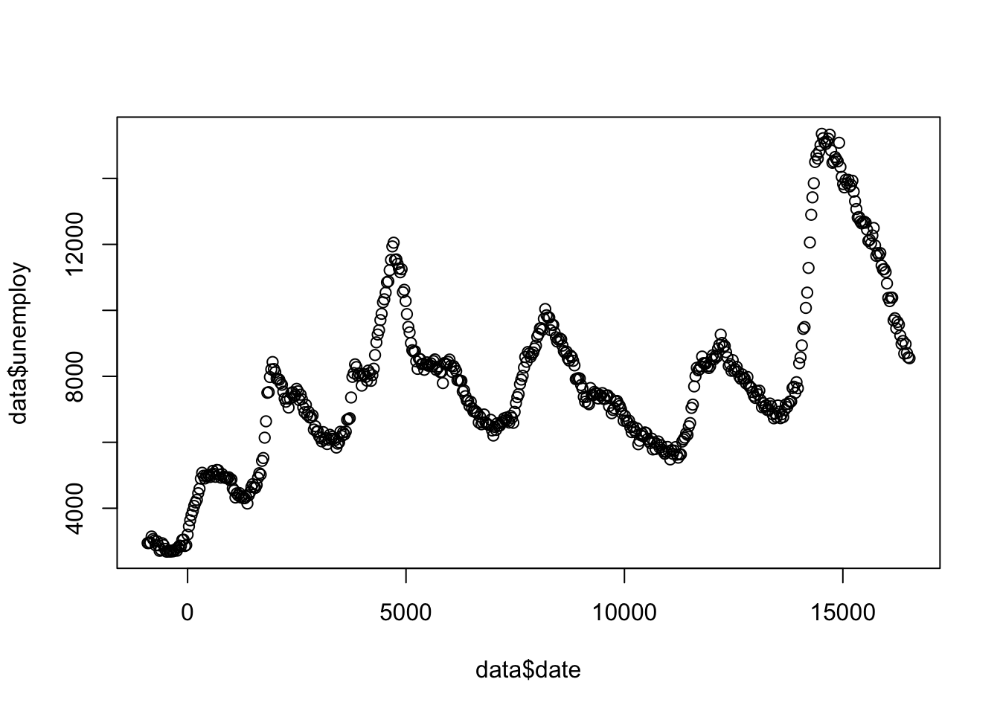
- Qu’est-ce qui est mis en évidence grâce à ce graphique ?
- Quelles informations sont moins visibles ?
Pour intégrer à la fois la proportion et le volume, on peut calibrer les largeurs des barres en fonction des volumes.
- Réaliser un mosaic chart pour visualiser à la fois les volumes et la proportion, à l’aide de Marimekko/Mosaic Chart.
Sunburst
Utiliser le package suivant pour réaliser un sunburst sur la série de données diamonds.
devtools::install_github("timelyportfolio/sunburstR")library(sunburstR)
library(data.table)
d1=data.table(cut=gsub("-","_",as.character(diamonds$cut)),
clarity=gsub("-","_",as.character(diamonds$clarity)),
color=gsub("-","_",as.character(diamonds$color)),f=1)
d1$label=paste(d1$cut,d1$clarity,d1$color,sep="-")
agg=aggregate(f~label,data=d1,sum)
sb=sunburst(agg,legend = list(w=200,h=20))
sb- Changer l’ordre des variables, par exemple, vous pouvez afficher d’abord les couleurs, ensuite les clartés, etc.
Treemap
- Réaliser un treemap sur les caractéristiques des diamants.
Waterfall chart
Le waterfall chart est très couramment utilisé pour montrer l’évolution d’une série de montants.
set.seed(12)
data=data.frame(label=seq(1,8,1),
x=rnorm(8,10,3))
data## label x
## 1 1 5.558297
## 2 2 14.731508
## 3 3 7.129767
## 4 4 7.239984
## 5 5 4.007074
## 6 6 9.183112
## 7 7 9.053954
## 8 8 8.115234df=data.frame(montant=c(data$x[1],diff(data$x),data$x[nrow(data)]))
df$s=sign(df$montant)
df$end=cumsum(df$montant)
df$end[nrow(df)]=0
df$start=c(0,df$end[-nrow(df)])
df$label=c(data$label,"final")
df$id=seq_along(df$montant)
ggplot(df, aes(label, fill = as.factor(s))) +
geom_rect(aes(x = label, xmin = id - 0.475, xmax = id + 0.475, ymin = end, ymax = start)) +
scale_fill_manual(values = c("red","blue"))
- A partir de l’exemple montré ci-dessus, créer une fonction qui permet de créer le waterfall chart. La fonction prend en entrée une série de données (à deux variables).
- Modifier la fonction pour afficher les valeurs dans les barres (comme sur le graphique suivant) 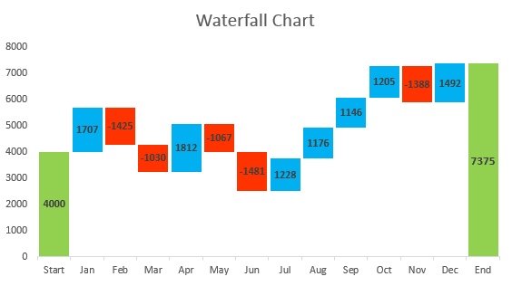
- Intéger la possibilité de marquer une étape intermédiaire (la fonction possèdera un deuxième argument n, qui indique le rang de l’étape intermédiaire), comme suivant l’image ci-dessous.

Histogramme et densité
Histogramme simple
hist(iris[,1])
Density avec les points
d <- density(iris[,1])
plot(d, type="n", main="Densité")
polygon(d, col="lightgray", border="gray")
rug(iris[,1], col="red")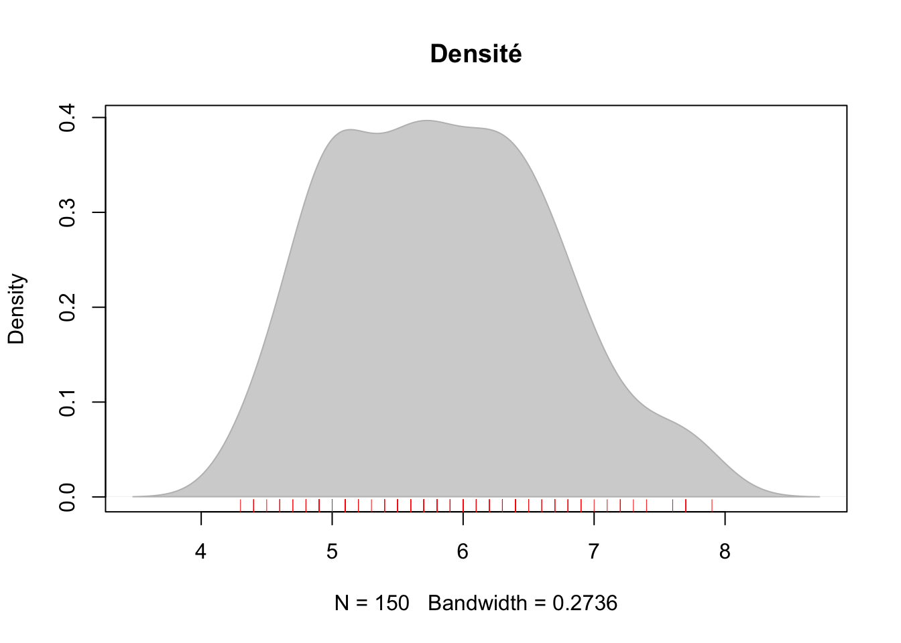
Histogramme avec beeswarm
Vous pouvez mettre des couleurs
library("beeswarm")
beeswarm(iris[,1:4])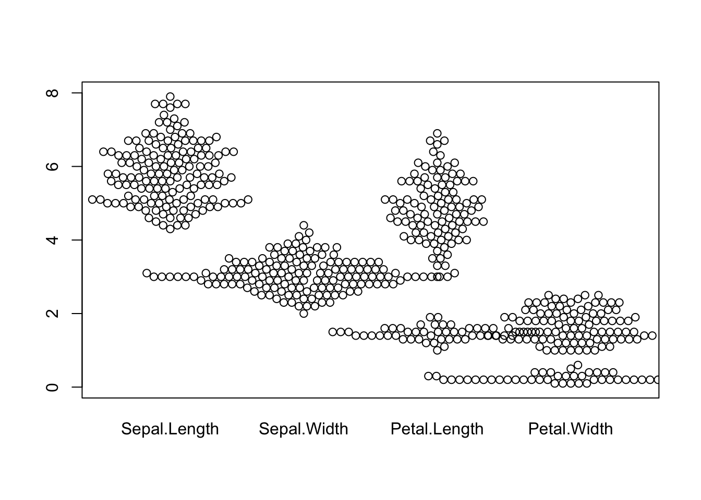
Histogramme avec ggplot2
ggplot(diamonds, aes(price, fill = cut)) +
geom_histogram(binwidth = 500)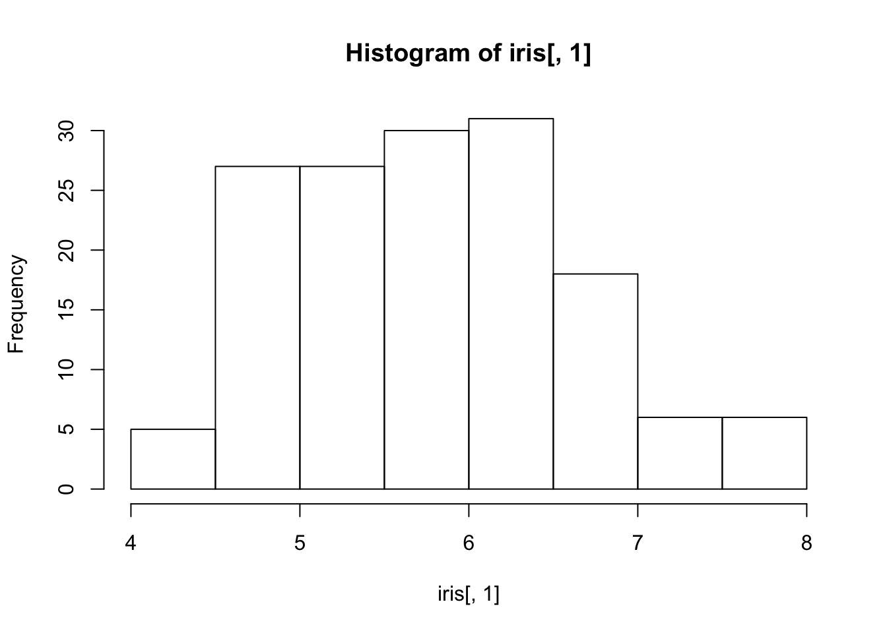
Densité
ggplot(diamonds, aes(depth, fill = cut, colour = cut)) +
geom_density(alpha = 0.1) +
xlim(55, 70)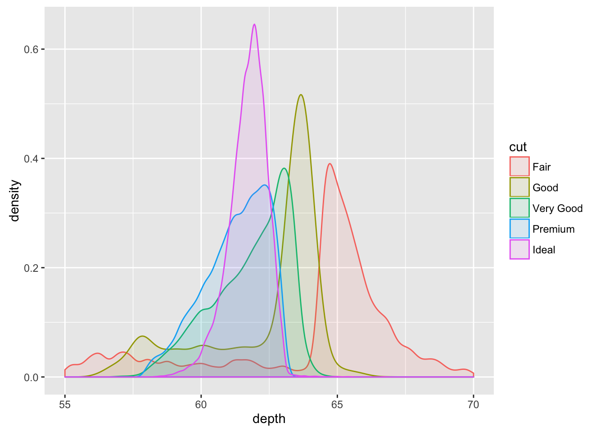
Faire varier la paramètre de lissage.
Densité des compositions
ggplot(diamonds, aes(carat, ..count.., fill = cut)) +
geom_density(position = "fill")
Histogramme et densité 2D
Vous pouvez consulter cet article 5 Ways to Do 2D Histograms in R pour apprendre à réaliser les histogrammes 2D.
En pratique, on peut utiliser un tel histogramme pour repérer les points de concentration sur un plan. Par exemple, vous pouvez explorer la base de données sur les accidents automobiles corporels, et avec les coordonnées GPS des accidents, analyser les concentrations géographiques des accidents.
Relation
Bubble chart
Les bubble charts sont très courant utilisés. Les différents paramètres permettent de représenter plusieurs variables:
- les axes x et y
- la taille des symboles
- le type des symboles
- la couleur des symboles
- le degré de transparence des symboles
- etc.
library(ggplot2)
ggplot(iris, aes(Sepal.Length, Petal.Length, fill = Petal.Width)) + geom_point()
p=ggplot(iris, aes(Sepal.Length, Petal.Length, fill = Petal.Width)) + geom_tile()
p
Utilisation des facettes de ggplot2
p+ facet_wrap(~ Species)
Graphiques 3D
Les graphiques 3D permettent de rajouter un axe en plus, pour visualiser les données dans l’espace.
Les packages threejs, plotly permettent de réaliser des graphiques interactifs en 3D.
library(threejs)
scatterplot3js(iris$Petal.Width, iris$Sepal.Length, iris$Sepal.Width,color=c("black","steelblue","red")[unclass(iris$Species)])Paramètres graphiques
Vous devez également prêter attention aux différents éléments suivants:
- Titre principal
- Titres des axes x et y
- Couleurs, formes des symboles
- Couleur de l’arrière-plan
- Polices des caractères
- Légende (position et textes)
Interactivité
Les packages pour des graphiques interactifs: plotly (de plus en plus développé), rCharts, highcharter, googleVis
plotly
Le package plotly permet de convertier un graphique créé avec ggplot2 (la plupart d’entre eux) en un graphique interactif grâce à la fonction ggplotly.
head(Insurance)## District Group Age Holders Claims
## 1 1 <1l <25 197 38
## 2 1 <1l 25-29 264 35
## 3 1 <1l 30-35 246 20
## 4 1 <1l >35 1680 156
## 5 1 1-1.5l <25 284 63
## 6 1 1-1.5l 25-29 536 84p=ggplot(data=Insurance,aes(Age,Holders,color=District))+geom_jitter()
ggplotly(p)dygraphs
library(dygraphs)dygraph(nhtemp, main = "New Haven Temperatures") %>%
dyRangeSelector()Autres packages
Vous pourrez également essayer d’autres packages. Les plus utilisés sont: ggvis, googleVis, plotly D’autres moins connus : rVega, rHighcharts, clickme, gg2v, rcdimple, metricsgraphics, rCharts, rbokeh
Copyright © 2016 DatavISUP